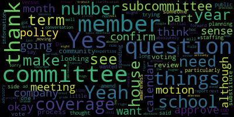
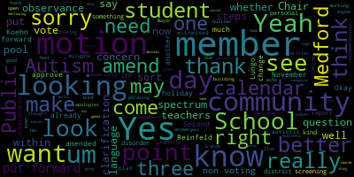
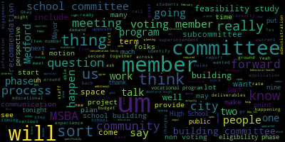

AI-generated transcript of 4.8.2024 Medford School Committee Regular Meeting
Back to all transcripts
[Olapade]: All right, we are ready to go.
[Lungo-Koehn]: Great. Okay, good evening. We have the seventh regular meeting of the Medford School Committee. Taking it back, John, I didn't know. Member Dapper, I'm like, what is that background? Where are you? Looks like a movie set. Seventh regular meeting of the Medford School Committee, April 8th, 2024, executive session at 6 p.m. and our regular meeting at or about 7 p.m. This meeting is being held remotely via Zoom and it's remote only and can be viewed live on the Medford Public Schools YouTube channel through Medford Community Media or your local cable channel, Comcast channel 98 or 22 and Verizon channel 43, 45 or 47. participants can log in or call in by using the following information. The meeting ID is 960-8498-5140. Member Ruseau, if you could call the roll, please.
[Olapade]: Mayor, I'm actually acting as the secretary while member Ruseau is in transit. So I will call the roll really quick. If that's okay with everybody. Member Bramley.
[Branley]: Present.
[Olapade]: Member Graham.
[Lungo-Koehn]: Member Graham is on. Can she unmute herself?
[Reinfeld]: I believe member Graham is also in transit.
[Olapade]: All right. Here. Oh, there we are. Member Intoppa.
[Lungo-Koehn]: Member Intoppa, are you here?
[Intoppa]: Yep. I don't know what's going off my mic again, but I'm here.
[Olapade]: Member Olapade, present. Member Reinfeld?
[Reinfeld]: Present.
[Olapade]: Member Rousseau? Present. and Mayor Lungo-Koehn.
[Lungo-Koehn]: President, seven in the affirmative, seven are here with us out of seven, thank you. I don't think we had, I didn't see any student representatives, so I can wait and see if they come on at seven.
[SPEAKER_03]: No one has yet.
[Lungo-Koehn]: Okay, if we could rise to salute the flag. I pledge allegiance to the flag of the United States of America and to the republic for which it stands, one nation under God, indivisible, with liberty and justice for all. We have executive session as number three, pursuant to general laws 30A section A3, the Medford school committee will convene an executive session to discuss strategy and preparation for negotiations with Medford educational secretaries, AFSCME council 93, Teamsters local 25 custodians, Medford teachers association for kids corner and Medford teachers association for paraprofessionals. as well as Carpenters SEIU Local 88, because an open meeting will have a detrimental effect on the bargaining position of the committee, and the chair so declares. Is there a motion to go into executive session? Motion to go into executive session. I'm Member Reinfeld, seconded by... I'll second. Member Branley, if you could call the roll. Member Olapade, thank you.
[Olapade]: Member Branley.
[Branley]: Yes.
[Olapade]: Member Graham?
[Branley]: Yes.
[Olapade]: Member Ansapa?
[Intoppa]: Yes.
[Olapade]: Member Alpada? Yes. Member Reinfeld?
[Intoppa]: Yes.
[Olapade]: Member Rousseau? Yes. Mayor Lungo-Koehn?
[Lungo-Koehn]: Yes. Seven the affirmative, zero in the negative. We are going to move to executive session and we'll be back as close to seven as possible. Can I confirm it's a different link or is it the same link? Just so the public knows. I thought I saw two links. That's why I'm asking somebody from the admin.
[SPEAKER_03]: It should be the same link.
[Olapade]: Breakout rooms are open.
[SPEAKER_03]: Member Graham, you have been re-invited to the breakout room. Good evening, everybody.
[Lungo-Koehn]: It is 7 o'clock. We're going on to our regular meeting. Does anybody have any business under good of the order? Hearing and seeing none, I'm going to move on to the consent agenda. We have bills and payrolls, regular school committee meeting minutes from March 18, 2024. student advisory council minutes, March 20th, 2024, strategic and capital planning subcommittee minutes from March 26th, 2024, and committee of the whole meeting minutes from April 3rd, 2024. Is there a motion on the floor? Motion to approve. Motion to approve by member Rousseau, seconded by, actually, sorry, before I call second, member Reinfeld.
[Reinfeld]: I have a question about how things get recorded if someone abstains a vote, because we have it listed as 7-0, but it was 6-0 and one abstention on last week's meeting.
[Lungo-Koehn]: Then you can just motion to amend the minutes and maybe shoot an email over to, is it Lisa who drafted Ms. Malone? All right. Okay, so for motion for approval by member Ruseau, as amended by member Reinfeld, is there a second as amended? Second. Second as amended. Roll call, please, member Olapade.
[Olapade]: Member Bradley.
[Branley]: Yes.
[Olapade]: Member Graham.
[Branley]: Yes.
[Olapade]: Member Ansapa.
[Lungo-Koehn]: Member Intoppa, you're muted.
[Intoppa]: Of course I am. I'm also just noticing another error in the minutes, so I'm gonna abstain from this one, which might be the same thing that, I'm sorry, clarification, Member Reinfeld, are you mentioning the vote on the stabilization fund?
[Reinfeld]: Yes, I am.
[Intoppa]: Okay, so yeah, so as amended, then yes, I vote to approve, sorry.
[Reinfeld]: Okay.
[Olapade]: Uh, remember all parties? Yes. Remember, Reinfeld?
[Lungo-Koehn]: Yes.
[Olapade]: Uh, the Russo? Yes. Mayor Lungo-Koehn.
[Lungo-Koehn]: Yes. 70 affirmative. Zero in the negative. Motion to approve the consent agenda as amended. There are no reports of subcommittee, so I'll pass it off to Dr. Edward Vincent, our superintendent of schools, for updates and comments.
[Edouard-Vincent]: Good evening. April is Autism Acceptance Month. Many of you remember this observance previously being called Autism Awareness Month, but thanks to the wonderful advocacy of individuals with autism and their supporters around the world, we're making an intentional positive shift to emphasizing acceptance of all neurodiverse people. Their perspectives and experiences enrich and improve our community every day. April is also Arab American Heritage Month. Throughout American history, Arab Americans have made so many contributions to our country and our society. And today, approximately 3.7 million Arab Americans call the United States their home. Finally, April is an opportunity to mark OT month. In Medford Public Schools, we are lucky to have skilled and compassionate occupational therapy practitioners in every school and serving students at every grade and age level. OT makes a big difference for our kids, starting with therapeutic early intervention services and extending all the way to post-graduation transition services for students with disabilities. Another reminder that this Wednesday, April 10th, schools are closed in observance of Eid al-Fitr. And next week, believe it or not, is April vacation week. All schools are closed the week of April 15th. We wish everyone a safe and fun break and look forward to returning to the classroom on April 22nd. April 22nd is also the date when many members of our Jewish community will begin to observe Passover. Some students and staff may take time away from school for religious observances, particularly on the first two days of Passover, when the Seder meal is typically celebrated with loved ones. I now have an update regarding our Performing Arts Recognition. Last weekend was exciting for many of Medford's Performing Arts students. On Saturday, the Medford High School Orchestra won a gold medal and the Middle School String Ensemble won a silver medal at the prestigious MICCA, Massachusetts Instrumental and Chorus Conductors Association. Concert Festival. Congratulations to the students, their families, and our own conductor-director, Ms. Sophia Chang, on these recognitions and accomplishments. Meanwhile, the Medford Mustang Winter Color Guard became the 2024 scholastic regional champions. Medford not only placed first in the division, but also received the highest scholastic score of the evening. We are very proud of our Mustang guard. and their accomplishments. Captains Maria Zasra, Mandy Chow, and Cindy Hamill led the team through this challenging and rewarding season. The guard is advised by Haley Rello and coached by Jackie Gaffney. Congratulations to all. Another reminder, middle school placement lottery. The lottery for middle school assignments for next year's sixth grade class will take place tomorrow, Tuesday, April 9th. Lottery results will be posted on the website at 3 p.m. Letters confirming each student's middle school assignment will be sent to all grade five students no later than Wednesday, April 24th. But again, the results will be posted on our website tomorrow at 3 p.m. Transportation Survey. Tomorrow is the last day to complete the online Safe Routes to School Family Travel Survey. Please take a moment to complete it. It will help us identify routes and other resources to encourage and enable more Medford students to walk, bike, and roll to school. The survey asks about a student's mode of transportation to and from school. It takes less than five minutes to complete and is available in 10 languages. The survey can be found on our MPS website and Facebook page. Schools with 50% or higher participation will receive an incentive from the Massachusetts Safe Routes to School Program. For everyone logged in on Zoom, Thomas will share the survey link in the chat. Thank you, Thomas Dalton, for doing that. Tonight's meeting, we have another busy agenda this evening. First, we'll present several generous donations offered by our community for the direct support of our students. We'll discuss each of these donations in more detail, but I wanted to begin by saying a warm thank you to the Medford Educational Foundation, the Medford Kiwanis Club, and the Medford Rotary Club for their reliable and impactful partnership and support of public schools. After that, Dr. Suzanne Colussi will present a report on substitute teacher pay and staffing. Especially since the COVID-19 pandemic, adequate and reliable substitute staffing has been a prominent challenge for all public schools. Medford is no exception. So we look forward to this informative and important presentation. You may have also noticed that I called our assistant superintendent, Galusi, doctor. Yes, indeed, I did. As you may have read in my Friday memo last week, Dr. Galusi defended, successfully defended her doctoral thesis without any revisions, which is a phenomenal feat. last month at Boston College, the Lynch School of Education. So congratulations, Dr. Galussi, and her original research for her doctorate in educational leadership focused on transformational and culturally responsive leadership. We are so proud of you, Dr. Galussi. In your packets, You'll also find a draft report on the district wide suspension and discipline report that was requested by the committee earlier this year. The final report will be presented to the committee on April 29th. So I do look forward to you communicating directly with me to send questions, additional pieces of data that you may be looking for so that I can add that to the draft. District staff are also working with the school building leaders and staff to develop this report while providing the appropriate and useful context for all of the data that it represents. In particular, we are working hard to ensure that the report does not inadvertently convey any identifying details about individual students. Again, we invite and welcome your feedback and input for the final product to be delivered to you. Finally, in your packets, you also received school handbooks for all of our schools. And the high school version of the handbook that you received will be completely finalized in time for the high school presentation that will be taking place on May 6th. The high school handbook will include our Medford High School, which includes the vocational school, and also inclusive of the Curtis Tufts High School. So all three schools will be represented in that one handbook for your review. So these important guiding documents are developed by school principals, assistant principals, school site councils, input from staff, and again, we welcome your feedback and suggestions on the handbooks. Thank you, and I look forward to this evening's meeting.
[Lungo-Koehn]: Thank you, Dr. Edward-Vincent. We have, like you said, three recommendations to approve donations. The first up is $3,180.11 from the Medford Educational Foundation.
[Edouard-Vincent]: Yes, so the Medford Educational Foundation earlier this year, they already donated $13,000 to Medford Public Schools, which was a very generous donation. They received an additional $8,949 in requests from teachers and educators. They were able to fund $3,180. And of that money, one of the things they were able to help purchase from one of our music teachers, Ms. Sarah Grant, she requested four keyboards to be added to the Curtis Tufts programming. And so we're very happy and very grateful to the Medford Educational Foundation for their generous contribution to that program. And again, we also want to thank Needham Bank and their branch manager, Jean K. Lau, for their continued generous donations to the Medford Public Schools. through Medford Education Foundation. They recently donated $5,000. So I just want to ask the committee to approve this generous donation in the amount of $3,180.11 to be added to the Medford Public Schools coffers. Motion to approve with thanks.
[Lungo-Koehn]: Motion to approve with thanks. Well said. Member Reinfeld, seconded by? Second. Member Graham. Yes, thank you very much to the bank and to Medford Educational Foundation for donating to our teachers. Roll call, please.
[Olapade]: Member Barrelli.
[Lungo-Koehn]: Yes.
[Olapade]: Member Graham.
[Intoppa]: Yes.
[Olapade]: Member Intoppa.
[Intoppa]: Yes, with thanks.
[Olapade]: Uh, member Olapade. Yes. And thank you again. Member Reinfeld.
[SPEAKER_14]: Yes.
[Olapade]: Member Ruseau.
[SPEAKER_14]: Yes.
[Olapade]: Mayor Lungo-Koehn.
[Lungo-Koehn]: Yes. Seven in the affirmative, zero in the negative. The motion passes. We also have a recommendation to approve $500 being donated by the Medford Rotary Club to the media technology program.
[Edouard-Vincent]: And just want to say thank you again in advance to the Medford Rotary Club for their generous donation supporting our vocational programming. And the media tech program will be most appreciative. And again, it benefits our students. So we thank them for this generous donation. And my ask of the committee is recommendation to approve this generous donation of $500.
[Lungo-Koehn]: Thank you, thank you to the Rotary. Motion for approval by.
[Intoppa]: Motion for approval.
[Lungo-Koehn]: Member Intoppa, seconded by. Second. Member Reinfeld, roll call please.
[Olapade]: Yes. Member Graham.
[Graham]: Yes.
[Olapade]: Member Intoppa. Yes, with thanks. Yes.
[Reinfeld]: Yes, but thanks.
[Olapade]: Russo.
[Lungo-Koehn]: Yes.
[Olapade]: Maryland occur.
[Lungo-Koehn]: Yes 70 affirmative zero in the negative donation accepted. And third up another request for approval of a donation from the
[Edouard-Vincent]: I just wanted to share that Medford is so blessed to really have both a wonderful Rotary Club and a wonderful Kiwanis Club. We want to thank the Kiwanis Club for their donation of $500 to our vocational programming. Again, Culinary Arts, our bistro, wonderful thriving restaurant, and I'm very grateful for their partnership and their donations. And I just want to ask the committee recommendation to approve this donation of $500 from the Kiwanis Club.
[Lungo-Koehn]: Thank you to the Kiwanis. Is there a motion for approval? Motion to approve. Member Graham, seconded by?
[Intoppa]: Second.
[Lungo-Koehn]: Member Intoppa, roll call please.
[Olapade]: Member Bradley.
[Branley]: So can I ask a question? Do I need to abstain because my daughter's in culinary or can I say yes?
[Lungo-Koehn]: Yes, I can say yes? I would think so, but I'm not state ethics.
[SPEAKER_14]: Can you hear me? Yes, you're not. That's not a problem.
[Lungo-Koehn]: So I'll abstain just to be... Okay, yes, yes, yes. No, no, you can abstain. That's fine. You can abstain. I think we'll accept money. I think we got the votes. So member Branley abstains. Who's up next?
[Olapade]: Uh, member Graham?
[Lungo-Koehn]: Yes.
[Olapade]: Member Intoppa? Yes, with thanks. Uh, member Olapade? Yes. Member Reinfeld?
[Reinfeld]: Yes, and thank you.
[Olapade]: Uh, member Rousseau? Yes. Mayor Lungo-Kirsch?
[Lungo-Koehn]: Yes, six in the affirmative, um, one abstention. Motion is approved.
[Graham]: Mayor?
[Lungo-Koehn]: Yes, member Graham.
[Graham]: Before we move on, can we ask that the superintendent send a thank you note to all these organizations on behalf of the committee?
[Lungo-Koehn]: Yes. Yes, yes, that's a yes.
[SPEAKER_03]: Thank you. Do you need a roll call? Are we good?
[Lungo-Koehn]: You got that?
[SPEAKER_03]: Yes. I don't think we need a roll call.
[Lungo-Koehn]: Okay. Thank you. Thank you. Next up is substitute pay report, Dr. Susan Glusi. Assistant Superintendent of Academics and Instruction. I'll turn it over to you.
[Galusi]: Thank you very much. Dr. Cushing's going to present the small slide deck. So while he's searching for it, I'm just gonna kind of start. So good evening, Madam Mayor, members of the school committee. Thank you so much, Dr. Cushing. Tonight, I'm presenting the requested substitute teachers supply and demand report. As background information, the school committee stated the following rationale for requesting this report. First, substitute teachers play a critical role in maintaining educational continuity and quality. when regular teachers are absent. Meanwhile, Medford appears to struggle to obtain enough substitutes to cover the need. Second, concerns have been raised for a long while regarding the adequacy of compensation for substitute teachers and the potential effect of compensation on the quality and availability of substitutes. And third, understanding patterns and reasons for teacher absenteeism is crucial for addressing any underlying issues and ensuring the effective allocation of resources. So as such, the slides presentation for this report will cover the sections listed within the request. The first section as listed here covers substitute teacher compensation and district comparisons of substitute pay rates. You can advance the slide. Thank you, Dr. Cushing. So the table presented here displays the details of the current substitute compensation for Metro Public Schools, which you will see has the blue highlight going right through. And then you're going to see the comparison of surrounding districts. You will notice a variance in daily rates ranging from the high end of $150 per day to Medford Public Schools at $90 per day with Woburn Public Schools, oh, thank you, at 110. Dr. Cushing's trying out his pointer. You'll also notice that some districts have set a different long-term daily sub rate, and some districts have not. At the current time, Medford does have two separate scales for substitutes that are working in long-term coverage needs. If they're licensed, it's $125. Otherwise, it's about $100. Currently Medford, as you'll notice, Malden has a tiered approach, which reflects the substitute's education, experience, and licensure. Currently Medford does not have a tiered approach. Moving. Thank you. So the second section covers substitute need and availability. and you can go to the, so the chart that is displayed on here correlates the total number of teacher absences to the total number filled by a substitute for school year 23, excuse me, 22-23, which is highlighted in the gray bars, and then currently for school year 23-24. It's important to note a few things here. First, absences reflect a variety of reasons, ranging from sick days, personal days, jury duty, bereavement, religious observances, professional development or conference needs, and then various forms of a leave of absence, which could be family medical leave act, maternity, workman's compensation, et cetera. So that is the third column, which for each school year is just a data point to acknowledge that there are leaves of absence. And each leave of absence ranges drastically in the amount of days that a teacher may be out. So that data point is going to fluctuate drastically. You will also notice that the amount of, this data is just for teachers. So it does not include any other staff. And the number of total teachers is listed underneath the school name. There are two asterisks at the bottom of this chart that I think are important to note. And one is that there are 17 teachers who have like a district wide status. And so they're not reflected in this chart. and that the total number of teachers active also fluctuates due to various needs for leave of absence. Currently, there are 495 employed teachers, but 489 are currently active as of right now. In looking at, you can see that there are trends. The total absences by building for last year, For the most part, absences have drastically fell for this school year. In some schools, maybe not all. So hopefully we're seeing that kind of, as we move closer away from the pandemic will start to see these numbers. improve a bit, but last year if we averaged out the daily need for a sub, it was 55 subs district-wide. That includes all reasons for absences. And then this year our average daily need for substitutes is about 32 people. I'm sure there'll be questions, but I don't know if you want me to pause or continue going. All right, I'm gonna continue going. So the third section in this report covers the substitute pool and the current coverage structure for Medford Public Schools. So our active pool of substitutes for school year 22-23 consisted of 38 substitutes. Three of those were assigned as long-term subs. While this year, our current active pool is 46 substitutes, and six of those have been assigned as long-term substitutes. So we have been increasing the pool of substitutes from year to year, but it still cannot meet the current demand. Most of our substitute pool comprises of college students, current Medford Public Schools, caregivers, and retired professionals. The availability of substitutes, because of that compromise of pool, does fluctuate throughout the school year, especially around college students and their availability in the months of January, May, and June. It is important to note at the end of each school year, substitutes are classified as inactive until they complete the yearly CORI, which is like the background check, and then they're activated again within our system and able to continue working. Dr. Cushing, if you mind going to the next slide. This is just a current structure of some internal coverage that we try to employ within the Medford Public Schools. So first, there are instructional support staff. Honestly, aka, these are the building substitutes. And so we have through ESSER, but we have one budgeted position at each school. However, not each school has been able to fill the need of one dedicated position. Currently, the Curtis Tufts, the McGlynn Elementary School, the Brooks, and the Andrews has a dedicated, what we call ISS, or building sub. The Roberts, the Missituck, and the McGlynn Middle have not been able to fill this position to date. The other position that we have are academic support leads. These are new positions to Medford High School. So with the shift in leadership, Principal Cabral created two dedicated positions this year to help alleviate daily absent coverages. And their title is the academic support lead. And then the third layer is a student supervisory assistant or SSA. These were created during the pandemic to help alleviate some of the coverage needs around lunch supervision or just daily coverage needs. These positions are unique because they work no more than about 18 hours a week. Currently, right now, we have an SSA position at the Missituck, the Brooks, and the Roberts. It is important to note that some of our SSAs were hired as paraprofessionals in the past couple of years. I also think before going on to the fourth section, it's very important to note that the structural nature of the secondary school level lends itself to covering teacher absences in a way that's just not possible at the elementary level. For example, at both the middle school and the high school level, there are designated study halls or teachers that can be assigned based on their schedules or open blocks. while at the elementary level that's not possible. And so principals are unfortunately forced to make difficult decisions to cover the class with in-school resources. And those in-school resources can range from the ISS or building sub, but it could also include specialist teachers. like Art, Music, PE, Computer, Library, Nexus, and it also can include reading and EL teachers, as well as school leaders themselves. And those coverages can range between blocks of time to the entire day worth of coverage. Okay, we may go to the next. Thank you. So the fourth section covers the budget impact of everything I just presented here. So on this next table, Thank you. This next table details the teacher coverage and loss of prep as a result of, especially at the elementary level, but especially due to lack of substitutes and the need for teacher coverages. So you will see that last year, in total, we spent $448,960 just in teacher coverages and loss of prep. The anomaly, as noted in the comments section for March of 2023, includes a few things. One, It includes, so when the contract was ratified, there was the retro pay of per hour rate for teachers increased. And so that resulted in about $34,730 that were paid to teachers on March 2nd per the contract to account for that retro need. Last year, there were also a great deal of coverage needs at Medford High School and the Andrews Middle School, which resulted in the total cost there. You can see currently for this school year, all of the data from all the graphs compiled for this report go up into March 31st. So we do not have clearly, but data for April, May or June. So to date, our current total of teacher coverage and loss of prep is $34,408.89. Next slide. breaks down the total impact. So you can see the graph, excuse me, the column in the middle has our anticipated budget, which was what we allocated in the operating budget to cover substitute needs as well as teacher loss of prep and teacher coverage. versus what we're actually spending. I think it's important to note here, as you noticed for last year's spend, which was fiscal year 2023, we ended that year with a total of $878,327. That number includes the $448,000 and change from the previous slide because this spending includes all three. It includes what we pay for substitutes, what we pay for teacher coverage, and what we pay for loss of prep. So if we were to subtract the $878,324,000, by the 448 and change, you'd get the total cost we spent on substitutes. And then the final section. is our recommendations and next steps to address the findings of this report and how to effectively address substitute supply and demand. And so, final slide, Dr. Cushing. Some of the things that we've been talking about internally are adjustments to the current substitute teacher compensation structure. We're discussing it and we're vetting out the implementation for fiscal year 25. This includes, but is not limited to. increasing the pay scale for substitute teachers and for the instructional support staff position, considering the establishment of a tiered pay scale system similar to what we saw for Malden, which includes consideration of a substitute's experience, licensure, and level of education, as well as looking into the feasibility of using an educational staffing company to build a greater pool of substitutes and also to help arrange and organize daily coverage needs, which is being used in some districts. So that vetting process of the educational staffing company has been ongoing all year, but these are some of the ways that we're looking to remediate and mitigate the current situation. And at this time, if you have any questions, please let me know.
[Lungo-Koehn]: Thank you, Dr. Galluzzi. Any questions from the committee? Member Branley, then Member Graham.
[Branley]: Just want to make sure that you can hear me. Yes. Okay, so just a few questions. Let's see here. Do we have data on how often we're pulling reading specialists, EL teachers, specialists, you know, music, PE?
[Galusi]: Yes, and I can get that to you. I don't have it at my disposal right now, but I know most of the principals. I think the tricky part would maybe be data from last year, where there was a turnover at one building. But I know principals have been keeping that data, so I can get that for you, definitely.
[Branley]: Perfect. I appreciate it. If you could share that with us, that would be great. And then my question, what is the difference between a teacher coverage and a loss of prep? I know when I was at the Brooks, a loss of prep was, okay, you know, Mr. Sacco's absent. There's no one to cover loss of prep.
[Galusi]: Correct. So teacher coverage is that
[Branley]: Go ahead.
[Galusi]: No, it's okay. Teacher coverage, you mostly see at the secondary level, but it's when teachers, you know, outside of contractual obligations are covering or they're picking up a coverage due to an absence or a long-term absence. And so we have to pay for that coverage. Does that make sense? They're taking on the teaching duties or the coverage of the class for the absent teacher.
[Branley]: Okay, and then loss of prep and teacher coverage paid at different rates.
[Galusi]: So in the previous contract, it was $30 an hour. And in the new contract, it's now $40 an hour. So if you're speaking about what was owed to them retroactively, we had to go back to when the dates reflected in the contract and add $10 to all of the teachers who either provided coverage or lost their prep. for the year.
[Branley]: Okay, so teacher coverage and loss of prep is both $40 an hour now.
[Galusi]: Yes.
[Branley]: Okay.
[Lungo-Koehn]: Um, I think that was all my questions. Thank you. Thank you. Member Graham and then member old party.
[Graham]: Um, well, all of these, um, sort of recommendations and next step be reflected in the budget that we see at our meeting after April vacation. Um, or Are these going to take more time to unfold beyond that meeting?
[Galusi]: I think probably, honestly, I want to have that conversation with the superintendent and Jerry McHugh. but I know I've been having ongoing, we have been engaging in ongoing conversations all year with Mr. McHugh around this and both Mr. McHugh and I have had meetings with the company to see what we could do, but I can get that definite answer from you once I speak to Mr. McHugh.
[Graham]: Yeah, I think it would just be helpful when we meet next about the budget, either to say, that it is included in the it is contemplated in the numbers that we're going to look at that we're looking at at that time or it's not and if it is like what are we saying we're changing so just if we could clarify that when we whenever we talk about the budget whether this is being reflected in or not that's i think that's my major question yeah we do that point point of clarification is that
[Galusi]: Mr. McHugh has already spoken about, and one of the slides clearly showed that we're under, the budget for this need, it does not reflect, they're not balanced. So the only thing I wanna check with him is if it's part of the April 23rd meeting, or if it's part of the May 8th meeting. That's what I'll clarify with him.
[Graham]: Okay, and then I think the other thing is if we are, I mean, I think the other point of this, um, report was to say, should we be adjusting our, our rate schedule at all? Um, yes or no. And so I think the other question for the budget reports is. What at what rate is he projecting when he is making his calculations? So is it at our current rate or is it at some other rate that we're going to go forward with or that you're recommending we go forward with?
[Galusi]: we're, I mean, I don't want to quote an amount, but we're definitely recommending an increase in the rate.
[Graham]: Okay. Yeah. I think it's just whenever we're talking about the budget, if we could just be clear about like what rate we are anchoring to from a sub pay perspective. So just so that we understand where we're at.
[Lungo-Koehn]: Absolutely.
[Graham]: Perfect.
[Lungo-Koehn]: Thank you. Um, member of the party, the member. Ryan felt.
[Olapade]: Yeah, thank you so much for this. A couple of questions on the way way end of the of the presentation. So when it comes to the feasibility of working with like ESS or like swing education, for example, is there a timeline that they would require us to, you know, put forth our want to work with them in partnership so that we have an idea about if we want to implement that, let's say, for the beginning of next year? Is there a timeline on that? We haven't really started the conversation.
[Galusi]: No, we have started that conversation. And to date, there is not a timeline. The only thing that they're clear about is that they can't build a pool overnight. And so they spoke a lot about the recruitment strategies that they would utilize to increase our existing substitute pool. And so they're just careful to say whenever they, let's say potentially we were to utilize them, whenever we engage in that partnership, it will take, you know, to their end, couple weeks, couple months to build an adequate sub pool for the district.
[Olapade]: Okay. And then when it comes to the cost, does that fluctuate depending on how much we're, you know, sourcing out for their, for their aid for us? Or is that just a flat kind of fee, um, because we're in partnership with them or was that again, part of the conversation with them in general?
[Galusi]: Um, no, some of that is part of the conversation, but I mean, they will use our existing rates that we have set. I mean, they were clear that they'd like to see an increase in those rates, but they will use the current rates that are already set. And then they take on for a temporary time, kind of full ownership of the staff, which means they'll do like the training and the onboarding, they'll do the organizing of staff. They'll deal with that for the first couple months of employment. And so there is, they take a percentage of the fee, the pay.
[Olapade]: Okay, thank you.
[Galusi]: Yes.
[Reinfeld]: Member Reinfeld? Yep, thank you, Dr. Galussi. I have a couple of clarification questions, which is to note, so the table of substitute coverage, this school year, these numbers are over eight months, whereas the previous year is over 10 months, right? Yes. Yeah, okay. But the number is still higher. Was school year 2022-23 particularly high in absence, or are we... or was this year particularly low? Without more context on either side, I can't quite tell.
[Galusi]: So I will be honest. I mean, I did not go and do a deep dive into pre-pandemic numbers. So I could do that. I mean, I do think that the absences and the need for absences has definitely been decreasing as we're kind of going month by month, year by year out of the COVID pandemic. So I think, but also the need for leaves of absence fluctuates so much, which you can also see in that chart. And that's a definite factor in terms of some of them might've been entire years of a leave of absence, right? So, and some of them may have been short-term. I can get some more data for you if you would like a comparison to pre-pandemic.
[Reinfeld]: Yeah, I'm just trying to figure out how we can project ahead as to what the need is going to be and what's typical here. Are things actively going down because the needs are changing? or not?
[Galusi]: I think there may be. Yeah, I think there may be a lot of reasons at play. I would be curious to kind of watch the trajectory from year to year. But.
[Reinfeld]: Great, so and then one little question, do long term subs attend planning periods and team school grade level planning? Is that part of the long term sub responsibility?
[Galusi]: Yes, for during the day. I would have to get back to you. I think some attend staff meetings and training sessions, while not all do. All right. But common planning time during the day with teams, yes. Good to know.
[Reinfeld]: Yeah, and then I just wanted to confirm, I think you introduced some information that may have shifted my numbers, but it looks we're spending 50 to 60% of the spending on substitutes is in-house, but in-house folks are covering about 86% of the need here. So if we are shifting away from in-house coverage, we're going to see that percentage change. Although I do want to say, especially noting that there are a lot of teachers here, thank you for this coverage. It is much appreciated.
[Galusi]: And I think that's, especially at the elementary level, At the elementary level, it's at the expense of. So I think we do have to look at the amount of money that we are spending on coverages and loss of PrEP. It may be difficult at the beginning, but we're talking salaries or increases in that substitute pay, because especially at the elementary level, they get one PrEP a day and it's not guaranteed because if the art teacher is out, if the music teacher is out, they lose their one and only planning period for the day, as well as, as I mentioned, support staff being pulled. And then that means we're affecting students and their services, and that's not equitable, and that's not okay. So we do have to do something to increase that. because right now we also don't have an active sub-pool that meets the daily demand. Absolutely.
[Reinfeld]: So I definitely want to second what Member Branley said about understanding where the, what coverage, where the services are being sacrificed in these situations. Thank you. And then I also wanted to ask, you mentioned a few of the things that the staffing company would do in terms of onboarding. I always have this question when we bring in consultants. What is the added value of paying a staffing company to do this work versus things that we've thought of in-house, such as just raising the rates of pay? Why are we bringing? What else would the company add that would make that better?
[Galusi]: Sure. Right now, we currently don't have a position that I would say, don't quote me on this title, but I would just say like attendance coordinator. Let's just say we don't have someone right now that works on recruitment and that actually organizes daily coverage needs. So the way it works right now is we have an online portal called Frontline, and teachers, when they need to be absent, they go in digitally and they record their absence in that system. Our current pool of substitutes are also connected within this system and they can go in, they log in, they can see all of the coverages that are needed within the district and they select the ones that they want to take as work for the following day or that morning. But there isn't someone that's maybe actively making phone calls. and trying to connect substitutes to the coverages that are needed. We're just relying on the online portal.
[Reinfeld]: Does that make sense? That makes sense, yes. I'm just trying to understand where that money is gonna go to hire someone outside versus to the people doing the substituting, doing the coverages.
[Lungo-Koehn]: Thank you, Member Reinfeld. Thank you, Dr. Galluzzi.
[Galusi]: Thank you.
[Lungo-Koehn]: Any further questions? Do you need a vote to go to Malden's rates or are you gonna come back to us at the next meeting once we have more of the budget figured out?
[Galusi]: I think we'll come back to you with what finance and the superintendent is recommending.
[Lungo-Koehn]: Okay, thank you.
[Galusi]: Thank you.
[Lungo-Koehn]: Next up, we have new business. We have offered by member and Tapa recognition of Autism Acceptance Month, whereas Autism Acceptance Month is recognized in the month of April. And whereas Autism Acceptance Day is recognized on the 2nd of April, now therefore be it resolved that the Medford Public Schools and Medford School Committee recognize Autism Acceptance Month within the Medford Public School System, recognize for future usage Autism Acceptance Day as April 2nd on all official Medford Public School calendars distributed to the public and report to the Medford School Committee on steps being taken with the Medford Public Schools to support students impacted by autism spectrum disorder, ASD, and how we go about identifying students who may need these services that have yet to receive them. Explanation, those within the advocates of the autism spectrum, Community are looking to distance themselves from groups that treat autism as a disease and something that needs to be healed. The focus is not on awareness of autism spectrum disorder, ASD, but more of a focus on acceptance of the members of our community that fall under the autism spectrum and making sure there are equitable systemic pathways for their success, being conscious of decisions that may impact members of the ASD community, both systematically and socially. This is the first step in this process to better understand and see how we as a city can better serve our community members impacted by ASD. I'll turn it over to you Member Intoppa for a motion or anything else you'd like to add.
[Intoppa]: Thank you very much Chair Lungo-Koehn. Yeah I just wanted to put this motion forward to sort of recognize and also I guess more amend our current calendar so I know we have we take a vote in November to put forward days of observance. I also want to clarify This is not a day off holiday I'm looking to put forward. It is more of a day of observance, day of acknowledgement. Currently as it stands, the last calendar I had checked, it is referred to as Autism Awareness Day, Autism Awareness Month. And this motion looks to amend that and to change that language, whether it has to get tabled till November or if we can do it right now, which would be preferable. So it's where it's already labeled and where it needs to be changed. The third part of the motion, the clarification about identifying students is how we're looking at how we are screening, screening techniques, as well as looking at ways that parents can come to us as a district to look at receiving services, however, they may need it. This is something that I would like in writing and to sort of get a report on. I have a personal, this comes from a, and the explanation kind of talks about it, of looking at how we make change and how we are impacted as a former student in the Medford Public Schools with an IEP who belongs in the neurodivergent community on the spectrum of the attention deficit disorder spectrum. This is something that I witnessed. I witnessed students who had 504s and IEPs, their struggles, how some of them would lose them because they were doing better, which to me makes no sense. Because if you're doing better on a plan, you're doing better because of the plan. It helps you. So, I'm really looking to see what we are doing. And this is sort of the 1st kind of steps and looking at how we as a community. can become allies within the autistic community. I'd like to make another point of, um, the use of disorder, um, uh, is not so popular. And my apologies for using the official language. Um, but also, um, you know, this really, really comes from, um, my personal experience working with those, um, within the autistic community. Um, as my buddy Dan puts it best, it's pretty easy for me to make you aware that I have autism and that usually proceeds to do it. But it's really hard for members of the community to accept me. And I would like to mitigate that harm. We're talking at a higher education level. Mitigate the harmful effects that this has on our students before they even get there. And as someone who's been looked at funny and scrutinized because of my diagnosis, this is my way of putting steps forward for better allyship. But we also want to look at the success. We want to look more at the success, not so much as a disease needs to be healed, as mentioned in the motion. But I feel like we can't do that until we look at how we are helping and how we are aiding the community. So that is all I have on the motion.
[Lungo-Koehn]: Thank you, Member Intoppa. So I'm going to assume you're moving approval. Is there a second? I can second. I second by member Branley. Dr. Edward-Vincent?
[Edouard-Vincent]: Yes, I guess as I was just listening to the description, on bullet number three, I completely agree with autism acceptance month, but where it's saying how students are identified, like there is a process that has to be followed legally. And so I'm not sure, I guess I need clarification or I'm not sure on the ask of saying do you want something that we legally have to do as a district to switch the way in either changing the wording or I guess I'm just not clear about point number three, because there are things that we have to follow legally by DESE, when IEPs are being developed. And I agree students should not be treated as if they need to be healed. But I just wasn't sure about what was being approved when it says how we go about identifying students. Because there's medical documentation. The medical community sends recommendations. There's official IEP testing that takes place. And I just want to be clear on what the ask is because I don't want the committee to be saying yes, they approve it and putting the school in a position where we are not following the appropriate regulations that we should be following.
[Lungo-Koehn]: Understood, Dr. Vincent. So maybe some clarification for member and topper, or would you like to amend section three of your resolution?
[Intoppa]: Yeah, I think, thank you, Dr. Edward Vincent for bringing to your concerns. I think that's what I'm just looking to see is what are the procedures we have to follow? That's really, I'm sorry if the phrasing is, this is my first motion. My apologies if the phrasing is weird. But yeah, I'm looking to see what protocols are from DESE.
[Lungo-Koehn]: Okay, so you're looking for information rather than us providing services to people that need them, even if they haven't been identified. Right, I'm looking, yeah. So you're looking to change that report to the school committee on steps being taken to provide supports for those impacted by autism spectrum disorder? Correct, yeah. Good, as an amendment?
[Intoppa]: Yeah, that would be good as an amendment. I would say a better method would be reports to the Medford School Committee on steps being taken with the Medford Public Schools to support students on the autism spectrum, due to just recommendations from the community on language surrounding how we address it.
[Lungo-Koehn]: Okay, so then just strike the second half of that, number three. Perfect. Correct, yep. And for approval by member Intoppa, as amended by member Intoppa, seconded by member Branley, roll call, please.
[Intoppa]: have a motion to amend the calendar. I may. Yeah Member Reinfeld had their hand up.
[Reinfeld]: Oh yeah, okay.
[Lungo-Koehn]: Member Reinfeld.
[Reinfeld]: I just in regards to point number two. Our policy. I see I see a, uh, lists this as although as awareness day, so I think that's a pretty easy motion to amend that policy. The question of putting it on calendars is a little different because we have the public calendar that is the closures and then there was a that we recognize Awareness Acceptance Advocacy Month. And so I'm wondering if that is part of, in terms of distribution to the public, is part of the longer conversation about the calendar and how it's published. But absolutely, I think we should amend the policy as it currently exists, that line there. And then my question on number three, I wondered if it would make sense, although possibly not with the suggestion just approved, for the subcommittee to sit down with CPAC, the Medford Family Network's autism spectrum parent support group and then the conversation around procedural safeguards and FERPA and all of those screening things and then prepare something that the full committee might be able to approve with a concrete step for the administration. I wonder if that information gathering might be well suited for subcommittee with members of the community.
[SPEAKER_09]: Mayor.
[Lungo-Koehn]: Member Graham.
[Graham]: Can I add to that suggestion that this go to the Behavioral Health and Special Education Subcommittee for that review?
[Lungo-Koehn]: Yes. Member Topper, is that okay?
[Intoppa]: Yes, absolutely. That would be great to have that conversation with CPAC as well as bring that to the subcommittee. And also to answer, sorry, to answer the question at hand of the school's calendars to reach the public. Yes, it would amend it to where it is already written to where that to where days of observance are listed. Because it has also been brought point of singling out 1 holiday is a concern, which I fully understand. So, wherever this would naturally be. Written is where we would like to see it amended. So yes, all recommendations of amendment are taken into consideration for the motion.
[Lungo-Koehn]: Okay, motion to move to committee as amended. Roll call, please.
[Olapade]: Member Moranly.
[Branley]: Yes.
[Olapade]: Member Graham.
[Branley]: Yes.
[Olapade]: Member Intoppa. Yes. Member Olapade. Yes. Member Reinfeld.
[SPEAKER_03]: Yes.
[Olapade]: Member Ruseau.
[Lungo-Koehn]: I believe we lost Paul for a minute, so he should be back. We'll just mark him absent.
[Olapade]: And Mayor Lungo-Koehn.
[Lungo-Koehn]: Yes, six in the affirmative, one absent, motion's approved. Member, Vice Chair Graham is going to read the resolution. Thank you.
[Graham]: Thank you. And Member Ruseau is online and just can't seem to respond. Dr. Cushing, if you could try to address that while we talk about the next resolution. Okay, so item number 2024-18 offered by me, be it resolved that the Medford School Committee will adopt the following revised subcommittee structure for this term. And this is basically to recognize that we have a relatively new member of the committee, member Intoppa has taken his seat after the resignation of member McLaughlin. And we had previously established subcommittees for the term. And so I went through, I did trade some information with Member Intoppa and also went back to all of the information I had about the formation of the subcommittees at the beginning of the term. And I'm putting forward a recommendation on how the subcommittees will look going forward for the committee's consideration. Um, and just so you know, I didn't just simply assume that member and Tapa was, um, interested in the same things that member McLaughlin was, although there was like a shocking amount of overlap. So that was nice. Um, but there were other sort of. You know, there are other sort of things that were happening, um, in terms of people's requests, um, the first time around that we were able to sort of shuffle around in this, um, uh, in this revised, um, subcommittee structure. So. It is in your agenda. It includes the behavioral health and special education subcommittee, buildings and grounds, curriculum, instruction, assessment, and accountability, diversity, equity, and inclusion, family engagement and communication, rules and policy, strategic and capital planning, superintendent evaluation, and last but not least, and we'll talk about this in just a little bit, the ad hoc committee handbook and evaluation process. Is there, are there any questions or any motions on the floor?
[Ruseau]: Motion to approve.
[Graham]: Motion approved by Member Rousseau. Seconded. Seconded by Mayor Lungo-Koehn. Miss Branley, Member Branley? Can I just ask a question?
[Branley]: Would it be helpful if people, you know, the participants on the meeting know who's on what committee?
[Graham]: Sure, I'm happy to read them. So the behavioral health.
[Reinfeld]: I'm sorry. You could potentially share the agenda on screen and not read it all.
[Graham]: That would be a great idea, but one second. Um, well, thank you. While that happens, I will, um, let people know who the chairs are. Um, behavioral health and special education chaired by member Rousseau buildings and grounds chaired by member Bramley curriculum, instruction, assessment, and accountability by member Reinfeld. Diversity, equity, inclusion by member of a pot a family engagement and communication by myself. Rules and policy by member. So, strategic and capital planning by myself. Superintendent evaluation by member of a pot a, and then the ad hoc committee handbook evaluation process by members. Dr. Cushing, are you able to pull it up? Great. Thank you.
[Intoppa]: Getting it now.
[Graham]: Um, so we did have a motion on the floor by members. So, and I believe a second by member Reinfeld. Is that right? Oh, I'm sorry.
[SPEAKER_09]: And we'll just make sure that everyone can see this before we call the role.
[Branley]: Thank you.
[SPEAKER_03]: Thank you. Perfect.
[Graham]: Thank you.
[SPEAKER_09]: Member Lopate, can you call the roll, please?
[Olapade]: Member Moranle.
[Branley]: Yes.
[Olapade]: Member Graham.
[Branley]: Yes.
[Olapade]: Member Intoppa. Yes. Member Lopate, yes. Member Reinfeld.
[SPEAKER_14]: Yes.
[Olapade]: Member Rousseau.
[SPEAKER_14]: Yes.
[Olapade]: Mayor Lungo-Koehn.
[Graham]: Yes. Seven in the affirmative, zero in the negative, motion passes. These subcommittees will be updated on the Medford Public Schools website now that we have taken this vote. So you can look for that information there in the coming weeks. Once updated, all of our information is on the website anyway, but you'll be able to see the subcommittees there as well. Item 2024-19, also offered by myself, which is a recommendation to appoint the School Building Committee provide an update about the Medford High School Building Committee. So Dr. Cushing, I have some slides that I would love to be able to share. If you can allow me to do that.
[Intoppa]: You should be good to go.
[Graham]: Okay. So what I wanted to do tonight was two things. Let me know if you can see my screen. Can you see that?
[SPEAKER_06]: Yes.
[Graham]: What I did want to do tonight was a couple of things. I wanted to provide the committee an update on where we are and also the community, because I know there's a lot of interest in this process to form a committee to lead forward on our bid for a re-envisioned Medford High School. So I thought I would provide a presentation. Given pieces of this presentation to various. uh, internal groups, um, over the course of the last couple of weeks, um, when people have asked. So I've just been trying to start to pull together something that, um, we can use as we're talking to people about what we're doing. So. As you may recall, um, we are required to create a building committee. Um, and there's a particular set of folks who are required to be on the committee earlier that, um, earlier this year in February, we passed a resolution that appointed me the chair of the committee. identify the people who would be on the committee and put out a call for application. So we'll get to that in good time. But the other thing we did during that meeting was talk about what were our goals for the committee. And I think it's worth restating as soon as I can clear some alerts out of my way here. Okay. So plan comprehensively for all programming currently residing on the Medford High School campus, including vocational and non-vocational, nine to 12 education, nine to 12 athletics, Medford Family Network, Medford Community Schools Programming, Early Childhood Education, including but not limited to Medford Early Education Program, which is NEAP and Kids Corner, as well as our transition program. Item number two was to consider whether placement of the Curtis Tufts High School on the Medford High Campus would provide increased educational opportunities to enrolled students. Item number three, is to ensure robust public input and stakeholder feedback at appropriate milestones throughout the project that complies with MSBA guidelines and guidance from the school committee. Number four, listen to educator and administrator input regarding the future of educational best practices and plans for students in Medford. Item number five, create plans for a building that advances Medford's climate goals and achieves any CHPS and LEED version five certification to meet the Paris Climate Accords 2030 and 2050 targets. And finally moves efficiently and effectively through the building process in a manner that ensures students are able to learn in the quote new building as quickly as is feasible. So where are we? The process of going through and building with MSBA is actually a five to seven year process. There's a very defined set of steps that we have to strictly adhere to. That's the graphic you see on the right. And at each step, you have to consider that there's a gate that gives us an invitation to the next step in the process. And we have to sort of go through whatever and meet the requirements that MSBA lays out for each phase in the process in order to be invited to the next phase. Um, so we are some way, some ways away from shovels in the ground. Um, but the one thing I wanted to make sure people are aware of is, um, we are, we are here where the star is. And that, and that, that is to say that we are out, we are not even in the process just yet. So our eligibility period starts on May 1st. That is when our clock starts ticking for eligibility. And I'll talk a little bit about what happens in the eligibility phase in just a second. But MSBA sort of staggers the start times. I'm sure that is important on their side in terms of getting brand new projects up and running. That is very labor intensive. So there's some staggering that happens in terms of those invitations going out and when they actually begin. So our start date is May 1st. So we are still ahead of that start date. Um, eligibility period starting on May 1st, um, has to be conclude concluded within 270 days. And there's a whole series of things that are required, um, for us to deliver in order to be considered as like compliance with our eligibility period deliverables. This phase of the project is really the phase where the district has to describe what it does in the building and what it plans to do in a new building. This is where we talk about how big is our population? What is the growth of the city? This is where all of that sort of city-side, school-side planning happens. And then from here, we start to engage with the construction professionals. So then we can bring on an owner's project manager, and then we can bring on the designers to do the feasibility study, and on and on and on. But until we finish this eligibility phase, none of those things can begin. What you may also remember is that back in February, we asked the administration to get started. And there's a tremendous amount of work that has to happen in the eligibility phase that uniquely the administration really has to do the work. So it's things like counting math classrooms and describing any changes to the educational process that they're envisioning. that would have an impact on space considerations, for example. So this phase, we have asked the administration to get started and they have. We have been working very diligently really since February. And so I just want to give you a quick rundown of what's happening for each of these five deliverables in the eligibility phase. So the initial compliance certification, it's basically a legal agreement. Our attorney has reviewed it. I've reviewed it. We've all reviewed it. We're ready to sign it. As soon as MSBA sends it to us, which will happen in a few weeks, we're ready to sign it. And we have been since December. So check one of five off the list. The second thing is to form the school building committee. We actually will do this tonight. So the school committee has to establish a committee that oversees the project. There are some requirements about who must be on the committee, but the vast majority of how we form that committee is entirely up to this group. And much of this was laid out um, resolution that put out the calls for applications, um, back in February. Um, item number three, their educational profile. There's three, there's two parts of this for us. Um, the first is. The, the true educational profile. So it talks about like, what do we do in our building today and how do we envision it will happen in the new building? And for us, this includes much, much more than just what happens in the nine to 12 space, because there's so much more that happens in our building. MSBA has asked us and has authorized us because our statement of interest outlined that this building is more than just a high school, that we consider and think about things like our pre-K programs, the Medford Family Network, and then, you know, again, possible integration of Curtis Tufts in some capacity. on to the campus. So just a quick status for you all. The drafting of this is in progress. Our current state questions, so all the questions about what happens today and how many classrooms exist and how many spaces, all of that is completed and it's in review by the administration. So that'll be in good shape for the building committee when they are ready for it. The future state questions, are also sort of in process. There's a lot of discussion happening there and that discussion is continuing. We do anticipate that some of those discussions really are sort of beyond the purview of the building committee, but really more about the educational work happening in the building. And so those things will come before the school committee in various forms for consideration in the coming weeks and months. So I would anticipate some of those reports coming forward between now and the end of the school year. The other piece of the educational profile for us is our chapter 74 viability. So that handles all of our vocational programs. There's a separate set of deliverables required for each of our programs, which includes talking about our demand and our capacity and any plans we have for changes. So those changes could include things like creating additional capacity for shops that are oversubscribed or where there's a huge wait list that we deal with on an annual basis. It could also include our ability to say there's a shop and a vocational program that we don't have today because we lack the space to do so, but it fits in our strategic priorities. So we have the options there from a chapter 74 perspective to think about growth of our growing vocational program. And this is, I think, another place where you'll see some information come forward to you from the administration as they think about what those programs are. And the MSVA has lots of rules and regulations around what they will consider to be a program that they will expand for. So for example, if we came forward and we said that we wanted to pursue a new chapter 74 program, they would ask us to substantiate the demand here in Medford. They would ask us to talk about where those programs are offered in our surrounding area. And they would also ask us to describe to them how our expansion in that space would fit with the regional blueprints for the labor market in the area. So it's not just like we want to do this, it's we want to do this, we have the demand for it, and the area that you live in actually also has demand for this kind of vocational program to be in place. So this is like maybe a more concrete example of some of the things that the school committee might see coming forward. So we talk a lot about and I'll just use electrical for a minute that that shop is at capacity. So 1 question and consideration we have is does the does the demand and the capacity support. an expansion of that program. And if so, this committee will have to weigh in and say, yes, we agree that that is something we wanna pursue from an educational perspective, and then it can go into our eligibility phase deliverables. Because obviously, even if we have the space, creating expanded opportunities in the vocational program does mean a commitment to supplies and teachers and all of the things that make a good, solid vocational program tick. So that's all coming, all of that work has been happening. Um, the superintendent's team has been meeting very diligently to, um, put all that together. The other piece that we'll have to do, um, from a, from an educational profile perspective, um, is work with the city to provide information about our population citywide. Um, and also provide, um, inputs around plan development, um, projected growth of school aged children, et cetera, because part of what MSBA will do is they will Um, they will, they will define what our target enrollment is, and that will guide all of the sort of sizing of the building when we get into that phase. So all of this has to be provided by us in this eligibility phase so that they can do their work. And then ultimately, um, they can report back to us that this is the size of the building that, um, from there. And that can, um, drive forward, um, all the design and planning. The other thing that we have to provide in this phase is a series of documents that outline our current maintenance practices. And that includes not just the high school, but our entire district. And it asks questions like, do you have job descriptions for your custodians and maintenance staff? And do you regularly recommission buildings? Um, and, um, how, who, you know, what kind of contractors do you have on board? Um, that helps support proactive maintenance. So there's a whole slew of questions here, um, that we have to answer as well. Um, we are well underway drafting, um, this, these answers, um, in addition, um, in working with. Um, the superintendent and Dr. Cushing and, um, John McLaughlin. who is our head of buildings and grounds. So they're working diligently to be ready to provide all this data. And much of this is rounding up data that exists sort of across the system and really being able to put it in one place and create a cohesive narrative. So there's tons and tons of work going on across all of those deliverables. And then the fifth and final step of eligibility, we're not ready for yet, but our mayor and our city council will have to help identify how we will pay for the feasibility study as a city. And the way that the process works from a feasibility study perspective is the city does agree to fund the feasibility study. And at the point at which we progress through all the various phases of the project, there's a reimbursement that comes back to the city, presuming that we go successfully through all of the MSBA stuff. We're not ready for funding the feasibility study just yet, Um, but that is sort of the, sort of the off ramp from the eligibility phase and into the phase where we start hiring the project team, which really means bringing on the owner's project manager. And then ultimately bringing on our designers that will do the feasibility study. As you may remember, we approved that there would be 15 voting members. Of the committee and a series of non voting members as well. And, um, we also put out a call, uh, for additional steps for additional support. Um, and we put out a call for applications, um, to appoint nine additional members. Which includes one school committee member, one city counselor, and seven open positions, um, for, uh, members of the committee who are residents, um, which include, which may include, um, teachers and staff are meant for public schools who are welcome to apply. as well as specifically members of the community with architecture, engineering, and construction experience, or experience with large program management and communication. So we have a really active community who was really, really excited about this prospect. We got 104 applications for nine member slots. The 104 applications included two school committee members, two city counselors, eight MHS staff members, and then 92 other members of the community. Our candidates are both diverse and qualified. So we have had lots of many, many, many hours of reading to understand who the folks were that were applying. Our demographics from an applicant perspective, 82% of those who applied were current or future parents of MHS students. 16% were people of color. There were nine members of the disability community and there were nine members of the LGBTQIA community. From a relevant experience perspective, 62% of the applicants had architecture, design, engineering, or other construction experience, which is a huge number. 66% had large program communications experience. And then there were many applicants who were members of a whole variety of boards and commissions across the city. So that was our applicant pool. Um, and, um, as we, um, thought about, as you may remember, um, the superintendent, the mayor and I, um, got together and we have, we've spent many hours, um, combing through 104 applications to really try to create a committee that. Um, is representative of Medford, um, and, um, uh, sort of meets the needs of what we outlined in terms of the charge. So. Our recommendation tonight, and I'll come back to this slide in just a second, but our recommendation tonight is that we agree to, we vote to appoint member Olapade as our school committee member, Emily Lazzaro as our city council member, community members, including Libby Brown, Marissa Desmond, Maria Dorsey, who is also a staff member at MHS, Brian Hilliard, Tracy Keene, Nicole Morell, and Luke Prisner. And then I'm also going to request that you all vote on appointing an additional non-voting member of the committee to appoint member Rousseau as a non-voting member of the school building committee. The committee is subject to approval by MSBA. So there may be changes that have to come once the MSBA gets our submission for the committee. There may be some changes there. that they might require, but my conversations with them so far have outlined that we have a lot of broad latitude and that everything that we're putting forward is consistent with what they're looking for. Our school building committee selection that we've put forward, we think represents Medford's incredible diversity. So 89% of our of our recommended appointees are current or future members of MHS students. 55% identify as female with 45% identifying as male. 33% are people of color. 9% are members of the disability community and 22% are members of the LGBTQIA plus community. So I'm gonna leave this up for a moment. but I believe that my recommendation would be that we take two votes tonight. One to appoint the voting members as described here, and then a second to appoint an additional non-voting member and member or so. So I will stop there, but I'll leave this slide up. So Mayor, did you want to take over or do you want me to continue?
[Lungo-Koehn]: No, I know there's some questions from the committee and the public. And all I can add, thank you for doing the slideshow, is that the amount of expertise and interest in this process is pretty exciting. And we hope to, one way or another, use or utilize the skills of all hundred and four people that want to be involved in this process because we have not only this committee that we need to move forward, but we also have a campaign throughout our community and education that needs to take place to get, you know, our hope is to get everybody on board to want to build a new flagship school for our students and staff that very much deserve it. Sure. Also spent several hours reviewing this.
[Edouard-Vincent]: I had just wanted to echo what member Graham and the mayor just said that the 104 applications they were absolutely, you know, outstanding the amount of architects and engineers and people who had like um authentic experience that could be you know the pool was so strong we could have had like five running committees i mean i know that's not what the ask is but i want the community to know that um it was not an easy decision um but from msba experience to architectural experience to communications experience um It was a wonderfully strong pool of candidates. And I know that we're gonna look for other opportunities to, even if you're not part of this particular grouping, to continue to tap into the expertise, knowledge, feedback, and willingness of all of the community members who really wanted to be part of this process. So I just wanted to echo that it was not an easy process, it was a rewarding process and I was just very impressed by the quality, how strong the entire pool was, very, very strong pool. So thank you to everyone who did apply.
[Graham]: And I think your point, I just wanted to help people understand sort of what comes next. So currently we will publish the profiles of all the folks who are appointed to the committee on the school building committee website, which is in construction right now. And the committee will meet for the first time before May 1st. They have to be, the entire committee has to be trained because they will all be subject to the open meeting law. All of our meetings will be conducted in public as are all of our school committee meeting. The very first things that the committee is going to need to do is establish operating ground rules for the school committee, the school building committee, and specifically to develop the communications and public engagement strategies that will help inform the enrollment profile and the operating structures in general. So part of the first jobs of the committee is really to say, how will we engage the community before we even get there? I do plan to send a note, everybody who applied and encourage them to let us know what their particular interests are so that as we are scheduling meetings that might be topically relevant to certain folks that we can reach out to them proactively and invite them to join us at the meetings because we do want to hear from qualified people in the community whether they're on the committee or not. So all of that is to come in terms of what we plan to do and then we will also report to the school committee in May. Um, about what those communication strategies are, but part of that communication and outreach strategy is. Um, not just to say, like, how will we operate and how will we engage the community? Um, but they'll specific will specifically take an action item to talk about proper engagement of all of our boards and commissions across the city. Um, and how best to work with, um, various, um, you know, sort of special interest groups across the city. Um, and make sure they are brought into meetings where the, where topically it makes sense for them to be involved, um, because all of that public input and engagement is really important. Um, member Branley, did you have a question?
[Lungo-Koehn]: Yeah. Member Branley and then Anthony.
[Branley]: Um, I am wondering how much the feasibility study is.
[Graham]: That's a great question. Um, they. they vary widely depending on how big of a building and how many students and all of that. But, um, I have been told to think in the range of two to two and a half million dollars. Um, but that is all work that we still have to do, um, to get to the point of, um, having good numbers in that space.
[Branley]: So the feasibility study alone is two to two and a half million dollars.
[SPEAKER_03]: Yeah.
[Branley]: Yeah. And you said reimbursement would be 100%. That's if we get- Reimbursement will definitely not be 100%.
[Graham]: So at some point further in the process, MSBA will establish what our reimbursement rates are. And if we successfully move through all the phases of the project, they will reimburse the feasibility study at that reimbursement rate. So if they say your reimbursement rate is 50%, then we can expect them to reimburse us at the, you know, as sort of successful conclusion for the feasibility study at that 50% rate. Um, so it will be commensurate with the reimbursement rate that is established by the board.
[Branley]: Okay. So we are going to be asking the city council for this money. Where does that money come from? Um, that is all work for the mayor and the council to do and good time. Yeah. Okay, and then just one other question. Non-voting member addition is member Rousseau. Why was that decided?
[Graham]: So my recommendation was for a number of reasons. One is that there were two members of the school committee who applied. Only one can be a voting member. But I feel like as I looked across the committee, there's a handful of things that I think are really important. member, so is the most senior member of this committee. So he has more history than any of us. Um, but he also has, um, a deep understanding of, uh, running and being part of a committee that is compliant with open meeting law. And, um, I think that's really important, um, as well as, um, really thinking about trying to make, uh, the ability of this committee, um, to sort of be part of the process as broad as possible. So that's my recommendation.
[Lungo-Koehn]: Okay, great. Thank you. Member Intoppa.
[Intoppa]: Sorry, the thought was there and then it quickly left. I yield my time to Mr. Guillen if possible. I'll re-raise when I think of it.
[Lungo-Koehn]: Member Reinfeld.
[Reinfeld]: Yes, so in the initial approval to set up this committee, we had identified various subcommittees, such as communication and community engagement, sustainability, mechanical, electrical, plumbing, finance, and then others as needed. Does this composition have the ability to form those subcommittees along with the non-voting members. I see you nodding. The other question is, looking at the broad range of expertise that we got, this committee was also designed to, I've been pushing very hard for advisory committees throughout the process. Are there particular advisory committees that you anticipate needing based on applications who were unable to be seated as voting members or general expertise that we need?
[Graham]: Yeah, that's a great question. Yes, there will be a number of advisory committees and part of the committee, the school building committee forming and establishing its communication strategies will also include sort of that rounded take instead of just like our take on what those advisory committees could and should be. So I want to bring all of these members together to have that dialogue so that we're hearing from all of them what they're seeing that they need and recommend, because these are all folks that are incredibly qualified. There are folks on the committee who are very familiar with MSBA. They're architects on MSBA projects. They're involved in sustainability and K-12 education. It's a very, very amazing and impressive group. And so I think as the committee begins to meet, it will do a couple of things. It'll identify those advisory committees. Um, it will also, um, identify, um, whether we collectively believe that we need a vice chair of the committee. So I think that's really a question that's best answered once we know what all the other structures are. So all of that will sort of be decided by this committee, um, as they get together and get to know each other and we get to know each other's strengths and how we're going to organize.
[Reinfeld]: Thank you. I'm looking forward to receiving the initial report so we can confirm that those things are moving and are as inclusive as we can. Yes, absolutely. I will now defer to Mr. Guillen.
[Lungo-Koehn]: Thank you, Member Reinfeld. Anthony Guillen, just to address for the record.
[Guillen]: Thank you. Anthony Guillen, 45 Elm Hill Avenue in Lemonster, president of the Medford Teachers Association. Just two points. One, I want to say that I applaud the appointment of Maria Dorsey to this committee. Maria gives a lot to our school. She's a great member and an excellent coworker. I would also encourage, if more community members are open, to have more teachers on this committee as just sort of the day-to-day operation questions can probably be best answered by those If that isn't possible, then on these advisory committees and these reach outs for specific specialties, I would reach out to the teachers that work at Medford High School, just again, for the day-to-day operational questions. More specifically, I would push this committee to include people who would understand the needs of the vocational programs, the amount of space and equipment and especially the specificities of something such as the robotics program in which temperatures need to be kept at specific levels and equipment can be affected by the environment. So I'd push that early and often, if not a permanent member of the community voting, then a advisory committee be set up for vocational needs specifically. Thank you. Thank you.
[Graham]: Yeah, thank you, Mr. Guillen. Totally agree. And one of the things that has to happen, you know, as we get all of this, I'll say paperwork in place, right? The MSBA will tell us how much space is allowable for various things. They have lots of rules and, you know, and to be perfectly honest, their rules around the vocational programming are improving, but they have always disadvantaged vocational programs. And we know that, and people are very aware of that. And so when we talk about bringing on experts to lead the feasibility study, one of the things that happens in that feasibility study space is lots of staff-oriented vision sessions that get to the heart of all of the things that you're talking about. So I anticipate a much broader inclusion of folks who work in Medford High School in that phase, because those are the folks who will be describing sort of what the options are and what the possibilities might become. So when we get there, there will be educator-specific vision sessions that our architects and our owners, project manager, et cetera, will hold on our behalf, specifically to make sure that we are hearing from all of you. But I think at any time, I've told Principal Cabral, I'm happy to come in and chat. with her staff anytime that you all would like to hear from me. And you all can feel free to reach out to me at any time if you have questions or you'd like to see, you know, you have an idea or a thought. And the last thing I'll say is that our meetings will be open to the public just like these meetings are. So we would love to have you all join us at those meetings as well.
[Lungo-Koehn]: Thank you, Member Graham. Thank you, Mr. Guillen. If I may, from the chair, and then I'll go to Member Intoppa. I just want to point out that this was a long week of not only reading 208 pages of applications, but also working as a group of three trying to discuss the pros and cons of different makeups of this committee and For me, I just want to let everybody know, I just feel like it's a little bit overloaded with politicians, especially where Jenny and I are already members. So for me to agree to a non-voting member, which I know is going to be a separate vote, I mean, I'd have to... suggest that we put two to four others on as non-voting alternates so that we can just balance this committee out a little bit more. That was my concern over the week. There are 94 resident applicants, all highly qualified, and I had a struggle with that balance. and there was some give and take, and it was agree to disagree type situations. But I just wanted to make that clear from my perspective. I want to make sure that this committee can move forward without any issues. And the only way I could see voting for one non-voting member is if we have a committee of, you know, a group of two, a group of three or five, which would serve as non-voting alternates. Member Intoppa?
[Intoppa]: Thank you Madam Mayor. I would just like to, I've realized the point was more on the lines of the question of Member Branley, but I would like to echo the point made by MTA President Guillen, as well as Chair Lungo-Koehn. It does feel a little politician heavy, and I would love to see if we do have a non-voting member addition, because again, the guidelines said one, minus, you know, the, You know, the 2 being, you know, member Graham and member. And this is no, this is with all due respect. This is not a shot. I want to make that very clear member. So it was a very, very intelligent person, especially when it comes to open meeting law. I have I use it as a resource for many questions. It's just a matter of me wanting to have more of our community members who maybe don't have that say that maybe this board would have. And including, especially our teachers, whether that be paraprofessionals, whether that be the people who walk those buildings daily. Because they will tell you the ins and outs that evolve every single day. So, yeah, I would say that, you know, obviously it's 2 different motions, but I would echo the concerns of chair and would probably want to put to get more 4 to 5. I don't know what the legality of having teachers that don't live in our district, because from my understanding, we have quite a few teachers who don't live within the Medford Public Schools who may be eligible to want to do this. I don't know the legality of that. That's just my own ignorance. But if we can open up it to having more than one school member, even as a non-voting member, I don't see why we couldn't do that. But I think that's all the collective thought I have right now. before I just start talking nonsense.
[Lungo-Koehn]: Okay, thank you, member Intoppa. Member Bramley?
[Branley]: I'd be more than happy to offer anything that anybody needs. If I needed to be another non-voting member, I'd be more than happy to volunteer for that, just to throw that out there. If we wanna take the non-voting member addition off altogether, I'm comfortable with that too. But just to offer that I'd be more than happy to do that also.
[Lungo-Koehn]: Thank you, Member Branley.
[Reinfeld]: Can I motion to approve the community members? It sounds like we feel comfortable moving forward with that vote now.
[Lungo-Koehn]: The first vote. Motion for approval of the committee members by Member Reinfeld, seconded by... I'll second. Member Branley. Roll call vote.
[Olapade]: Member Branley.
[Branley]: Yes.
[Olapade]: Member Graham?
[Branley]: Yes.
[Olapade]: Member Atapa?
[Intoppa]: Yes.
[Olapade]: Member Olapode? Yes. Member Reinfeld? Yes. Member Ruseau? Yes. Mayor Lungo-Koehn?
[Lungo-Koehn]: Yes. Seven in the affirmative, zero in the negative. The community members is one through seven are approved and thank them in advance for their many hours of service ahead.
[Graham]: Mayor, I'd like to also make the motion that Member Olapade and Emily Lazzaro are appointed as voting members pursuant to our original motion.
[Lungo-Koehn]: Second. Member Graham, motion for approval of our voting members for school committee and city council, seconded by Member Rousseau. Roll call vote.
[Olapade]: Member Bradley.
[SPEAKER_09]: Yes.
[Olapade]: Member Graham.
[SPEAKER_09]: Yes.
[Olapade]: Member Intoppa? Yes. Member Olapade? Yes. Member Reinfeld?
[Lungo-Koehn]: Yes.
[Olapade]: Member Ruseau?
[SPEAKER_03]: Yes.
[Olapade]: Mayor Lungo-Koehn?
[Lungo-Koehn]: Yes. Seven in the affirmative, zero in the negative. Member Olapade and Member Lazzaro have been approved to be on the committee. Thank you for your service.
[Graham]: And I'd also like to make a motion that Member Ruseau is added as a non-voting member of the committee.
[Lungo-Koehn]: I just like to make an amendment, or if one of my colleagues can, that we add at least two more non-voting alternates in case we need them, and we can hopefully tap into two other community members that are willing and able to serve on this committee.
[SPEAKER_09]: I'm happy to accept that amendment, Mayor.
[Lungo-Koehn]: Okay, motion for approval by Member Graham as amended. Question about that. Member Ruseau?
[Ruseau]: Yes, are we talking about people who have actually applied, or we're just gonna randomly pick people that you want, Mayor?
[Lungo-Koehn]: It's not who I want, Member Ruseau. It's people that applied. We had 92 community members, and including teachers, additional, I don't know how we wanna create the makeup, but I think we should add two more people that applied from the community.
[Ruseau]: Okay, I just wanna clarify, you keep using the word alternate, though. These are not alternates, so I don't know what you think the non-voting members are. They must come to every meeting They are required for a quorum. Actually, I'm not sure about that, but they must come to every meeting. Thank you. But they are not alternates. They don't get to vote if voting members stop showing up or if we have to find a new voting member, they don't get the seats.
[Lungo-Koehn]: Well, you said, I don't know what I think they are and what the motion was, that it would be alternates. So two additional non-voting alternates.
[Reinfeld]: Or from like alternating for the non-voting member Rousseau, or?
[Lungo-Koehn]: We can change the amendment and just add two alternates from the community, non-politicians, or we could.
[Intoppa]: I don't know what an alternate means, Mayor. Point of clarification.
[Lungo-Koehn]: Point of clarification, member Intoppa.
[Intoppa]: I think the point is, is that member Graham in presenting was saying about how MSBA may have a cap of a certain amount of the working groups. The idea was, is that we approve three, and if we need to cut down to one non-voting member, then we look at the pool of who we want to put forward. The idea is to have three, and if we can have two, then we have two. And if we have three, then we can have three.
[Graham]: MSBA is not going to weigh in on the size of our committee. Our committee is also already very large. With that said, I think if we want to add two additional non-voting members, I think that's totally fine. I would not call them alternates though, because that has a whole different connotation and we really haven't even talked about what that might mean. So I'm happy to amend the motion to say that we're going to Ad member Rousseau is a non-voting member and that there will be two additional non-voting members brought forward to this committee for approval at the next meeting.
[Intoppa]: I'd second that. Could I add on to that in the statement that they should be priority sent to faculty members of the building that is being built?
[Lungo-Koehn]: I think it should probably be from that pool. A non-politician.
[Intoppa]: Right, right, from that pool, yes, from the applicant pool.
[Lungo-Koehn]: Non-politicians from that pool, yep.
[Intoppa]: Okay, thank you.
[Lungo-Koehn]: Okay, so the amendment to have them as non-voting members. Find a personal privilege. Find a personal privilege.
[Ruseau]: Mayor, I find it offensive that as a politician, you're using the politician in the four-letter word, sensitive. It's really obnoxious. I just wanna be very open with that. You're a politician there, you're talking about politicians in the negative sense that the public frequently does. It's not helpful when politicians ourselves talk about each other in that sense. Okay, you're not concerned about the number of politicians, you're concerned about politicians in the negative sense of the word. So I just need to get that out there, because your tone is extremely offensive.
[Lungo-Koehn]: Oh, your tone's offensive, member Ruseau. That's fine, thank you. You're talking, you're condescending. So I'm not gonna tolerate it either. I think, any, if you look at the list is member Graham, myself, two voting members from current, I mean, past politician, another one, I mean, there's, we had nine. Mayor, that's what the MSBA requires. And I'm asking to make the board larger so that we can have more community members, because I don't think this is great optics. Can we move the question? Motion for approval as amended by Member Graham, seconded by? Second.
[Reinfeld]: Yeah, I thought Member Ruseau had done that. Roll call, please.
[Olapade]: Member Branley.
[Branley]: So can we just be clear that we're adding the two additional members, correct, from the pool? That's correct.
[Reinfeld]: To be represented and voted on at the next meeting as to who they are.
[Branley]: Thank you. Yes.
[Olapade]: Uh, member Graham?
[Reinfeld]: Yes.
[Olapade]: Member Intoppa?
[Intoppa]: Yes.
[Olapade]: Member Olapade? Yes. Member Reinfeld?
[Intoppa]: Yes.
[Olapade]: Member Rousseau?
[Lungo-Koehn]: Yes.
[Olapade]: Mayor Lungo-Koehn?
[Lungo-Koehn]: Yes. Seven to the affirmative, zero to the negative. Motion as amended is approved.
[Graham]: Mayor, can I just say congratulations and thank you in advance for your service to the people that we've just appointed? Um, and to let everybody know that I will be in touch, um, after tonight.
[Lungo-Koehn]: Yes. Thank you very much. Thank you, everybody. We have reports requested revised school handbooks as requested. Handbooks for all schools are respectfully submitted for review review by the ad hoc committee. Brooks Elementary School, Miss Attack Elementary. McGlynn Elementary, Roberts Elementary, Andrews Middle School, Working Draft, McGlynn Middle School, Medford High School, Vocational Technical, Curtis Tufts. Final draft to be submitted on May 6, 2024. Is there a motion for approval?
[Reinfeld]: There's a question about this. The ad hoc committee, when created, was about developing the process for review. I was told it wasn't about doing the actual review. Sorry, I just got a zoom error message. So I want to confirm that. Is this ad hoc committee doing the review as well? Because I am concerned about my time. I will say that is my bias on this.
[Graham]: I think that depends on, at least for me, that depends on what you all come up with in terms of, like, what you think the process should be. And if you recommend that, that's great. And if not, I think. I would be happy to hear whatever that recommendation is.
[Reinfeld]: And just to report that we because this committee changed, we do not have the final process in place.
[SPEAKER_09]: Yeah.
[Reinfeld]: For the record.
[Branley]: Member Friendly. I just have a quick question. Why do we have a different handbook for every school? Why do we not have a handbook for elementary one for middle and one for high school?
[Edouard-Vincent]: If I may. Each school is required to have a handbook. The essence, the content of the handbooks are nearly identical, but it is a process that they go through with their individual school site councils. And so there are, the majority of the content is identical, same set of rules, and the councils have the opportunity to weigh in. And there could be very slight minor differences, but I would have to say like 90, more than 90% of the content should pretty much be identical. But there is a requirement for each school to have their own handbook.
[Branley]: Like, okay. I figured that that was a case that we all needed. They all needed to have their own handbook. I just figured one could say the Brooks with the principals and, you know, whatever staff that needs to be on there, but all the meat is the same because to me, if I'm a student at the Brooks and I go over to the McGlynn, the rule should be the same. If I'm at the high school and I walk over to the Volk or I'm at the, at the Curtis, those rules should be the same, same at the McGlynn and the Andrews. So I'm just, I just want to make sure that, like you said, 90 something percent or whatever, it is the same.
[Edouard-Vincent]: Yeah, so there are some, excuse me. They are essentially 90% the same, but There are a few caveats. So in the in the high school one, there will be a slightly different. The Curtis Tufts will follow what the high school does, but due to the nature of program requirements or needs, there are there could be some slight modifications. So it'll all be in one handbook where you can look at it, and you'll be, once it's finalized by that May 6th meeting, you'll be able to see where the slight changes are. But essentially, all of the schools are doing the same.
[Branley]: Okay, I just, when I got the binder, I'm like, I can't go for four elementary schools and see if page one was the same as page one. the way wrong. So I just wanted to make sure that was clarified. Thank you. Welcome.
[Reinfeld]: Follow up on that. You said every school is required by whom? Is that a school committee rule? Is that a state rule?
[Edouard-Vincent]: What is it? It's something that every school does with their site council, they will work on their school handbooks. And even with their improvement plans, they are involved with their school site councils. It's just it's, I mean, for as long as I've been in education, every school has always had a handbook, which clearly talked about what are the rules so that the families, parents, caregivers know, oh, if you do X, Y, and Z, you're violating the code of conduct. And, you know, all of the, you know, we spent a lot of time, this committee, talking about expectations, whether it's around bullying and other things. So it's following the laws, but also just having it in one place so you could have an artifact to refer to.
[Reinfeld]: So it's- I guess I'm looking at it from this side for the first time. So I was curious. Yeah.
[Lungo-Koehn]: Thank you. Member Rousseau. Yes.
[Ruseau]: These are required by law to be approved each year by the school committee.
[Lungo-Koehn]: there a motion for approval?
[Intoppa]: I will put forward the motion.
[SPEAKER_09]: Member Intoppa is seconded by... Are we just motioning to receive them and place them on file? Like we're not approving the handbooks right now, right?
[Lungo-Koehn]: No, because it says the final draft to be submitted on May 6th, 2024. So I just, you were approving that the final draft will be submitted on May 6th, 2024. Got it, thank you. Motion for approval by Member Intoppa, seconded by? Second. Member Reinfeld, roll call, please.
[Olapade]: Member Branley?
[SPEAKER_09]: Yes.
[Olapade]: Member Graham?
[SPEAKER_09]: Yes.
[Olapade]: Member Intoppa?
[SPEAKER_14]: Yes.
[Olapade]: Member Olapade? Yes. Member Reinfeld?
[SPEAKER_14]: Yes.
[Olapade]: Member Rousseau?
[SPEAKER_14]: Yes.
[Olapade]: Mayor Langenkern?
[Lungo-Koehn]: Yes, 70 affirmative, zero negative motion passes, or revised school handbook submission by May 6th passes. Suspension and discipline report, a draft of the district-wide suspension and discipline report has been provided to the members for review and feedback. The final report will be presented at the April 29th, 2024 meeting. Motion for approval?
[Reinfeld]: What are we approving that they'll be presented at the next meeting?
[Edouard-Vincent]: Yes.
[Reinfeld]: And we're sending comments, feedback, further requests to you, Dr. Edward-Vince.
[Edouard-Vincent]: Yes. Thank you.
[Reinfeld]: I'm unmuted. Motion to approve. Thank you.
[Lungo-Koehn]: Seconded by Member Intoppa. Roll call, please.
[Olapade]: Member Branley.
[Lungo-Koehn]: Yes.
[Olapade]: Member Graham.
[SPEAKER_14]: Yes.
[Olapade]: Member Intoppa. Yes. Real party. Yes. Member Reinfeld.
[SPEAKER_14]: Yes.
[Olapade]: Member Ruseau.
[Lungo-Koehn]: Yes.
[Olapade]: Mayor Lungo-Koehn.
[Lungo-Koehn]: Yes. 70 affirmative is set in the affirmative. Zero in the negative. Paper passes. We have two condolences. The members of the Medford School Committee expressed their sincerest condolences to the family of Gladys Gomez, grandmother of Brianna Martinetti, nurse at the Roberts Elementary School. Also, the members of the Medford School Committee expressed their sincerest condolences to the family of Prudence Penny Lolo, an elementary teacher in Medford for over 30 years. We all may take a moment of silence.
[SPEAKER_03]: Thank you.
[Lungo-Koehn]: Our next meeting is on April 24th, 2024. It's a committee of the whole budget meeting. Fiscal 25 budget meeting update number three, and that will be via Zoom. And April 29th is our regularly scheduled meeting in the Alden Memorial Chambers, Medford City Hall, in addition to Zoom. Motion to adjourn. To adjourn. So seconded by member Reinfeld. Last roll call, please.
[Olapade]: Member Branley.
[Branley]: Good job. Yes.
[Olapade]: Member Graham.
[Branley]: Yes.
[Olapade]: Member Ansaba.
[SPEAKER_09]: Yes.
[Olapade]: Member Olapote is a yes. Member Reinfeld.
[Ruseau]: Yes.
[Olapade]: Member Ruseau.
[Ruseau]: Thank you for doing this tonight. Yes.
[Olapade]: Mayor Lungo-Koehn.
[Lungo-Koehn]: Yes, thank you.
Olapade
total time: 2.92 minutes
total words: 433

|
Lungo-Koehn
total time: 17.18 minutes
total words: 2558

|
Branley
total time: 2.99 minutes
total words: 571
|
Reinfeld
total time: 6.52 minutes
total words: 1007

|
Intoppa
total time: 8.11 minutes
total words: 1375

|
Graham
total time: 33.36 minutes
total words: 5356

|
Ruseau
total time: 1.16 minutes
total words: 225
|
|
|
|
|
|
|
|
|
|
|
|
Back to all transcripts
{kind=link}
{kind=link}
{kind=link}
{kind=link}
{kind=link}